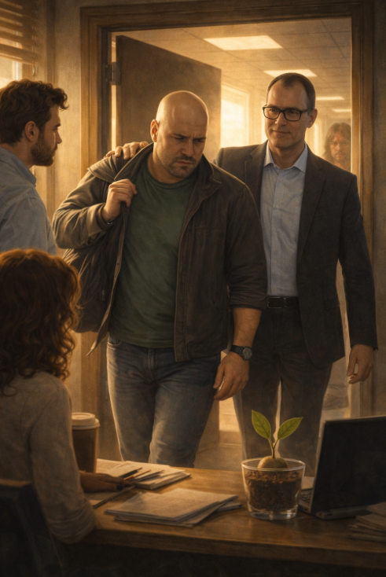

Venerdì 20 marzo 2026
Venerdì 20... non 13 ma...
Non sono superstizioso. Sono un seme di avocado. Non ho le condizioni cognitive per la superstizione. Eppure stamattina, quando la luce è entrata dalla finestra con quell'angolo storto tipico dei giorni che non hanno ancora deciso cosa vogliono essere, ho guardato il calendario sul muro e ho pensato: certo. Il Venerdì dopo Venerdì 13. Naturalmente.
Le foglioline erano ferme.
Non rigide come il giorno della trappola. Ferme. Il tipo di immobilità che non è tensione ma consapevolezza. Come quando sai già che qualcosa sta per succedere e il tuo corpo ha smesso di resistere all'idea e ha cominciato semplicemente ad aspettare.
SimoneQ era cambiato.
Non di colpo. Non nel modo cinematografico in cui le persone cambiano nelle storie, con un momento preciso e una musica che lo sottolinea. Era cambiato nel modo in cui cambiano le cose reali: lentamente, per accumulo, un millimetro alla volta, finché un giorno guardi e quello che vedi non assomiglia più a quello che ricordavi.
Negli ultimi due giorni aveva risposto alle mail in ritardo. Piccolo. Quasi impercettibile. Ma io i suoi ritmi li conoscevo, ormai, come le piante conoscono i cicli della luce.
Aveva smesso di passare vicino al mio bicchiere la mattina. Un gesto piccolo, quasi automatico, che aveva sempre fatto — un'occhiata, un mezzo sorriso, una di quelle presenze silenziose che non dicono niente ma significano ci sono. Sparito.
Aveva cominciato ad arrivare tardi alle conversazioni. Non alle riunioni formali — a quelle era puntuale come sempre. Alle conversazioni informali, quelle che contano, quelle dove si capisce davvero come sta una persona. Arrivava quando stavano già finendo, si sedeva per un momento, ripartiva.
QuaSim aveva fatto un lavoro preciso.
Aveva convinto SimoneQ che il problema fosse lui. Che la sua presenza, la sua posizione, il suo ruolo in questa storia fossero parte del problema invece che parte della soluzione. E SimoneQ — che era una persona che pensava, che si interrogava, che aveva quella qualità rara e pericolosa di prendersi davvero la responsabilità delle cose — ci stava credendo.
Questo QuaSim lo sapeva benissimo.
Fu Michela a capire per prima quanto fosse grave.
Erano le undici e qualcosa quando si avvicinò al mio bicchiere con quella sua tazza di tè e quella sua aria di chi sta per dire una cosa che preferirebbe non dover dire.
— Ha parlato con QuaSim ancora ieri sera — disse sottovoce.
Ho mosso una fogliolina. Lo sapevo.
— Non so cosa gli stia dicendo. Ma stamattina SimoneQ ha mandato una mail a Simone chiedendo un incontro formale. — Pausa. — SimoneQ non chiede mai incontri formali a Simone. Parlano direttamente. Da sempre.
Ho mosso l'altra fogliolina. Questo è grave.
Michela ha annuito, come se avessi parlato ad alta voce.
— Sì — ha detto. — È grave.
L'incontro tra Simone e SimoneQ avvenne nel pomeriggio, porta chiusa, tende abbassate.
Non so cosa si dissero. Nessuno lo sa con certezza. Ma quello che uscì da quella stanza quaranta minuti dopo aveva la qualità delle cose che hanno lasciato un segno: Simone con quella piega sulla fronte che compare solo quando sta cercando di capire qualcosa che non torna, SimoneQ con gli occhi di chi ha appena detto ad alta voce qualcosa che teneva dentro da troppo tempo e adesso non sa se si sente meglio o peggio.
Giulia li guardò entrambi dall'altra parte dell'ufficio.
Sandra, in fondo alla stanza, abbassò lentamente lo sguardo sul suo lavoro.
Io fissai il corridoio.
E nel corridoio, in fondo, quasi nell'ombra, vidi per un secondo la sagoma di QuaSim. Fermo. Che guardava verso l'ufficio di Simone con quell'espressione sua — non soddisfazione, non trionfo, qualcosa di molto più freddo. La verifica silenziosa di un piano che sta procedendo secondo le previsioni.
Poi sparì.
Come sempre.
Raffaele arrivò alle quattro del pomeriggio.
Non era il suo orario normale. Non era nella sua area. Non aveva nessuna ragione visibile di essere in quell'ufficio in quel momento, il che significava che aveva una ragione invisibile, e le ragioni invisibili di Raffaele, da quando aveva stretto il suo accordo nel magazzino, avevano una sola direzione.
Si avvicinò a SimoneQ con quella naturalezza costruita di chi ha preparato la scena in anticipo.
— Senti — disse, con il tono di chi sta per dire una cosa a malincuore — ho sentito cose in giro. Non so se siano vere. Ma mi sembrava giusto dirtele.
SimoneQ lo guardò.
E qui vidi la trappola chiudersi completamente.
Perché SimoneQ, che due settimane prima avrebbe guardato Raffaele con la giusta dose di scetticismo, adesso era in quello stato in cui le crepe cercano conferme. In cui il dubbio che qualcuno ha seminato dentro di te è già cresciuto abbastanza da fare da terreno fertile per qualsiasi altra cosa voglia piantarci.
Non sentii le parole di Raffaele. Ma vidi il loro effetto.
Vidi SimoneQ che annuiva. Che le spalle scendevano di mezzo centimetro. Che qualcosa negli occhi si faceva ancora più chiuso, ancora più verticale.
Vidi Raffaele andarsene con quella mascella stretta di sempre, ma stavolta con qualcosa di diverso sotto — non il risentimento abituale, ma la soddisfazione piccola e amara di chi ha fatto quello che gli era stato chiesto e adesso aspetta la sua parte.
Poi arrivò il Capo.
Nessuno lo vide arrivare. Questo era il suo modo — non entrare, comparire. Come se lo spazio si ridisegnasse attorno a lui invece di accoglierlo.
Non era grande. Non era imponente nel senso fisico del termine. Era una di quelle presenze che occupano una stanza non con il corpo ma con una qualità dell'aria che cambia quando entrano — più densa, più ferma, come se la gravità decidesse di prendere il suo lavoro più seriamente.
Vestito con quella semplicità ordinata di chi non ha bisogno di comunicare niente attraverso l'apparenza perché quello che comunica lo fa attraverso altro. Capelli grigi, tagliati con precisione. Mani ferme. Nessuna fretta. Il tipo di lentezza che non è pigrizia ma controllo assoluto del tempo — la lentezza di chi sa che il mondo aspetta.
Nessuno sapeva il suo nome. O almeno, nessuno lo diceva. Era il Capo. Il capo supremo del controllo. Quello che poco si vede ma che c'è, sempre, come una pressione costante che non diventa mai dolore ma non scompare mai del tutto.
Si avvicinò a SimoneQ senza che nessuno capisse esattamente da dove fosse sbucato.
Si fermò davanti a lui.
SimoneQ alzò lo sguardo.
E nei loro occhi vidi qualcosa che non riuscii a decifrare completamente — non era riconoscimento, non era sorpresa, era qualcosa di intermedio, come due persone che si aspettavano di incontrarsi ma non qui, non adesso, non in queste condizioni.
Il Capo parlò. Voce bassa. Pochissime parole. Il tipo di frase che non ha bisogno di volume perché ha peso.
Non sentii cosa disse.
Ma vidi SimoneQ alzarsi.
Prendere la giacca dallo schienale della sedia con un movimento lento, quasi automatico, come chi esegue un'istruzione che non ha ancora del tutto elaborato.
Vidi Giulia scattare in piedi dall'altra parte della stanza.
— SimoneQ. — La sua voce era ferma ma aveva qualcosa sotto, qualcosa che cercava di non diventare paura. — Dove vai?
SimoneQ si voltò verso di lei. E per un momento, in quel momento preciso, l'effetto della trappola di QuaSim e le parole di Raffaele e la crepa e tutto il resto si dissolsero per un secondo, e quello che vidi nel suo sguardo era il SimoneQ che conoscevo — confuso, stanco, ma presente.
— Non lo so ancora — disse. — Ma devo andare.
— Con lui? — disse Giulia, indicando il Capo con un gesto che cercava di essere discreto e non lo era per niente.
SimoneQ guardò il Capo. Guardò Giulia. Guardò me, nel mio bicchiere, per la prima volta in giorni.
— Sì — disse infine.
Michela era in piedi anche lei. Sandra si era alzata in silenzio, quella sua alzata silenziosa che pesava più di qualsiasi esclamazione.
Simone arrivò di corsa dal corridoio, come se avesse sentito qualcosa nell'aria — e probabilmente l'aveva sentita, perché certe cose si sentono prima di vederle.
— Cosa sta succedendo?
Nessuno rispose.
Perché nessuno lo sapeva davvero.
Il Capo aveva già raggiunto la porta. Si era fermato sulla soglia senza voltarsi, con la pazienza di chi sa che l'altro arriverà.
SimoneQ guardò ancora una volta la stanza. Le scrivanie. Le persone. Me.
— Mi dispiace — disse. A tutti. A nessuno in particolare. Nel modo in cui ci si scusa quando non si sa esattamente di cosa ci si sta scusando ma si sente che qualcosa si sta rompendo e si vorrebbe che non fosse così.
Poi seguì il Capo fuori dalla porta.
La porta si chiuse.
Non sbatté. Non fece rumore. Si chiuse con quella precisione silenziosa delle cose inevitabili.
Il silenzio che seguì era diverso da tutti i silenzi che avevo conosciuto in quell'ufficio.
Non il silenzio del weekend, denso e abbandonato. Non il silenzio della concentrazione o quello della cautela. Era il silenzio di dopo — di quando qualcosa è appena cambiato e nessuno ha ancora trovato le parole per dirlo.
Simone era fermo in mezzo alla stanza con le mani lungo i fianchi e quell'espressione sulla fronte, quella piega, più profonda che mai.
Giulia guardava la porta.
Michela si era seduta lentamente, come chi ha bisogno di appoggio per stare in piedi con i pensieri.
Sandra — Sandra che osserva prima di entrare, Sandra che ascolta con le spalle — si avvicinò alla finestra e guardò fuori, verso il parcheggio, verso il punto dove probabilmente il Capo e SimoneQ stavano già sparendo in una direzione che nessuno di noi conosceva.
Io fissai la sedia vuota di SimoneQ.
La giacca non c'era più. Il computer era ancora aperto. Sul monitor, l'ultima mail che aveva scritto a Simone — quella con la richiesta di incontro formale, il primo segno che qualcosa stava cedendo — era ancora visibile sullo schermo, come una firma sotto qualcosa che nessuno aveva voluto davvero firmare.
Pensai a QuaSim nel corridoio. Alla sua verifica silenziosa. Al piano in tre fasi che stava procedendo secondo le previsioni.
Pensai a Raffaele con la sua mascella stretta e la sua soddisfazione amara.
Pensai al Capo sulla soglia, paziente come qualcuno che non ha mai dubitato che l'altro lo seguisse.
E poi pensai a SimoneQ — al suo mi dispiace detto a tutti e a nessuno, al suo sguardo che per un secondo era tornato quello di prima, alla sua giacca presa dallo schienale con quel movimento automatico di chi esegue qualcosa che non ha ancora scelto del tutto.
E questa distinzione, piccola e fondamentale, era l'unica cosa a cui riuscivo ad aggrapparmi in quel momento.
Fuori, il cielo stava cambiando colore.
Dentro, la sedia di SimoneQ era vuota.
E da qualche parte in fondo al corridoio, ne ero quasi certo, QuaSim stava già passando alla fase successiva.
Ho guardato Simone. Ho guardato Giulia. Ho guardato Michela e Sandra.
Quattro persone in piedi in un ufficio che aveva appena perso qualcosa.
Le mie foglioline si raddrizzarono lentamente, verso di loro.
Non era un saluto.
Era una promessa vegetale.
— Guacamino 🥑
← Puntata 36 Puntata 39 →